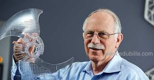
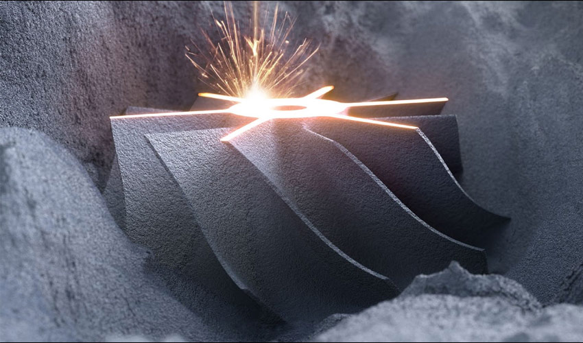
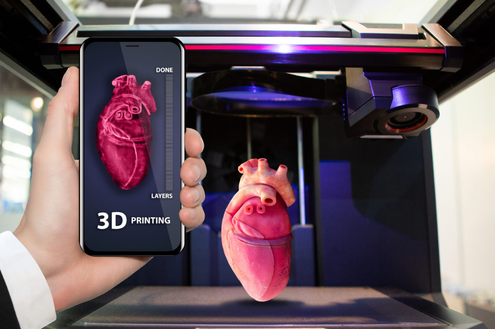
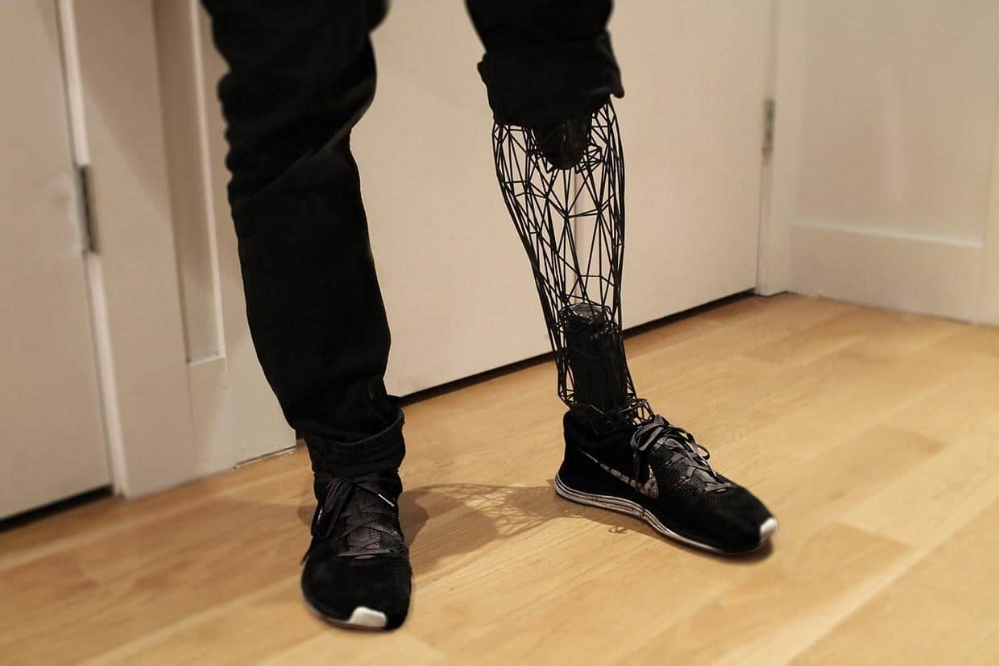
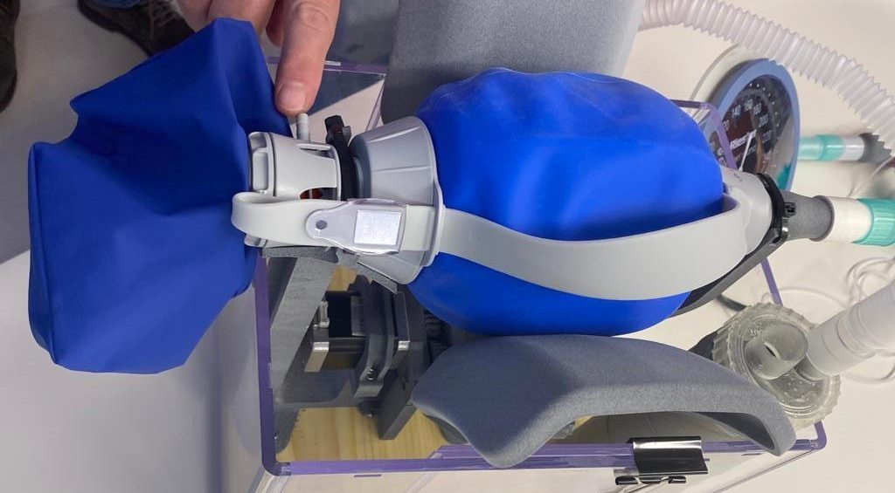
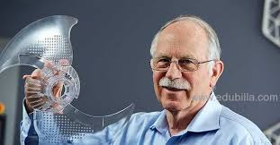
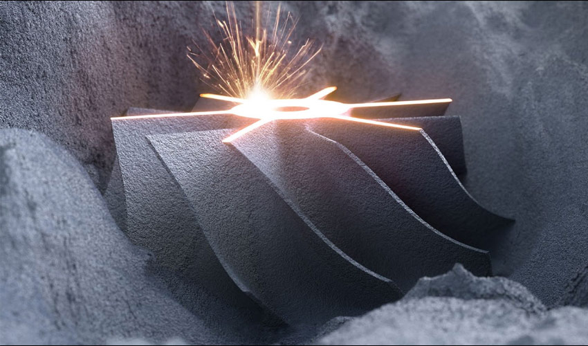
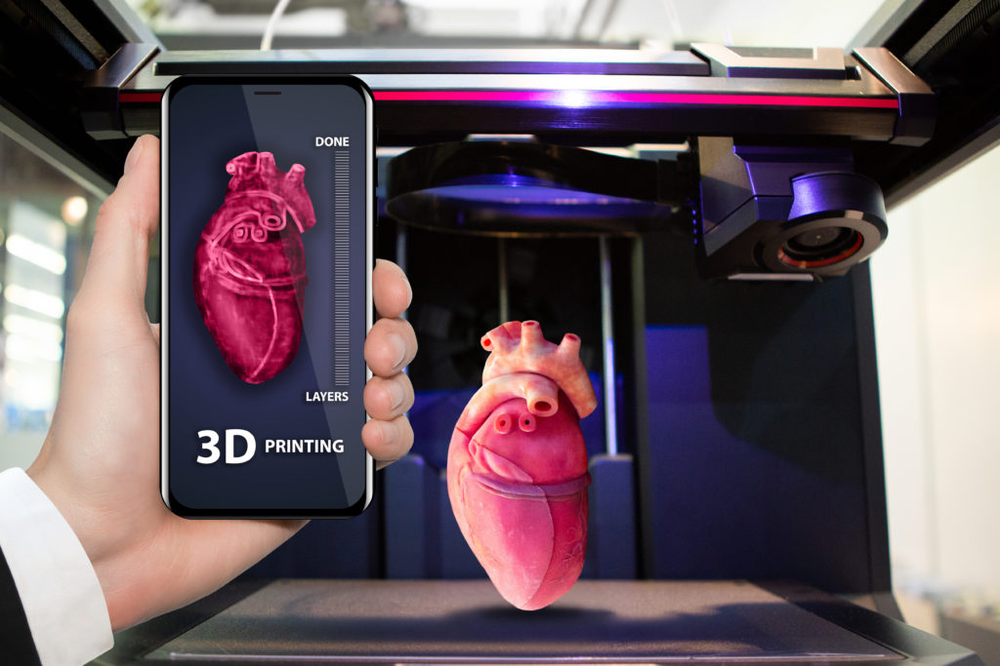
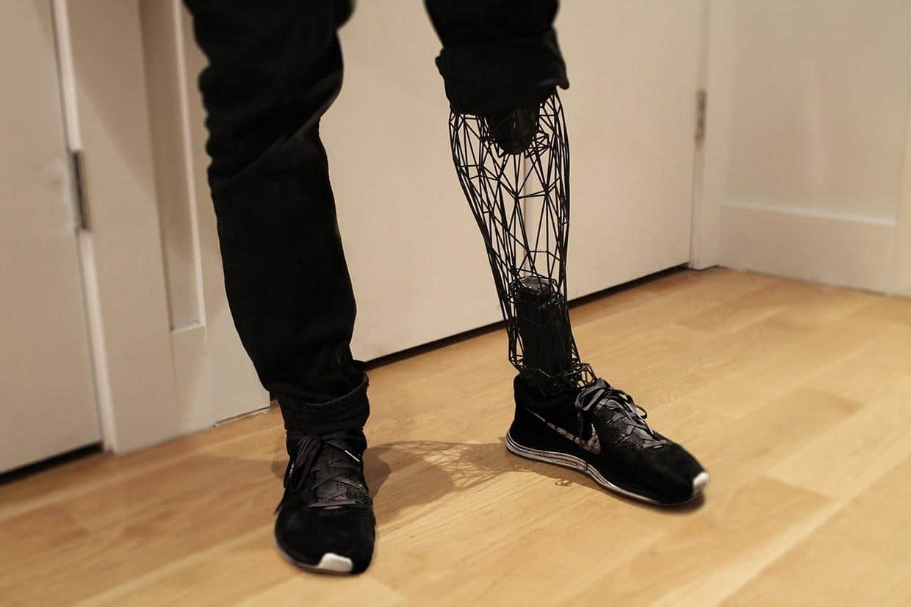
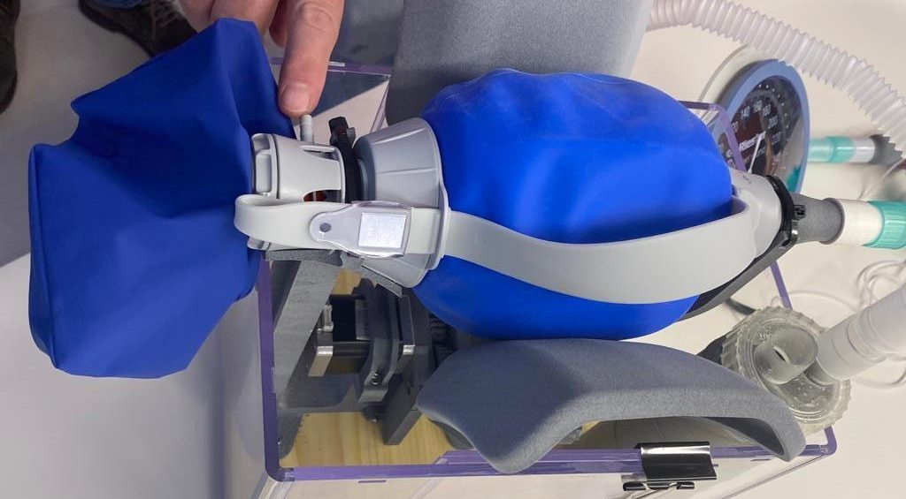

Evolution Of Additive Manufacturing
1] 1980s: Birth of the main 3D Printing Techniques
1. 1981-
Concept of 3D printing has been imagined back in the 1970’s,but the first experiments are dated from 1981.
The first 3D printing attempts are granted to Dr Kodama for his development of a rapid prototyping technique.
He was the first to describe a layer-by-layer approach for manufacturing, creating an ancestor Stereolithography
(SLA). Unfortunately, he did not file the patent requirement before the deadline.
2. 1986-
American engineer Charles Hull was also interested in this technology and submitted a first patent for
stereolithography (SLA) in 1986. He founded the 3D Systems Corporation and in 1988, released the SLA-1,
their first commercial product.
3. 1988-
In 1988, at the University of Texas, Carl Deckard brought a patent for the SLS technology, another 3D
printing technique in which powder grains are fused together locally by a laser.
4. 1989-
Scott Crump is the inventor of fused deposition modeling (FDM) and co-founder of Stratasys, Ltd. Crump invented
and patented FDM technology in 1989 with his wife and Stratasys co-founder Lisa Crump.
In less than ten years, the three main technologies of 3D printing were patented and 3D printing was born!
2] The 1990s: Emergence of the Main 3D Printers Manufacturers & CAD tools
1. 1993-
Binder jet 3D printing this technology was first developed at the Massachusetts Institute of Technology and
patented in 1993.
2. 1994-
Solidscape launched ModelMaker, the first 3D wax printer.
3. 1995-
Selective laser melting, one of the several 3D printing technologies, started in 1995 at the Fraunhofer Institute
ILT in Aachen, Germany.
4. 1997-
AeroMat launched the first 3D metal printer using Laser Additive Manufacturing (LAM).
5. 1999-
Objet Geometries (today Stratasys) launched the first 3D printer that can print both hard and soft materials to
simulate different material properties in one object.
Scientists at the Wake Forrest Institute for Regenerative Medicine printed synthetic scaffolds of a human
bladder and then coated them with the cells of human patients.
3] The 2000s: 3D printing becomes mainstream
1. 2000-
The millennium saw the first 3D printed kidney, but we would have to wait 13 more years to see it
transplanted into a patient.3D printed kidneys are now working perfectly and researchers are experimenting on
accelerated growth to transplant organs very rapidly.
2. 2004-
This was the year of the initiating of the RepRap Project which consists of a self-replicating 3D printer. Yes,
it is possible to 3D print a 3D printer. This open-source project led to the spreading of the FDM 3D desktop 3D
printers, and of the popularity of the technology in the makers community.
3. 2005-
Z Corporation launched the Spectrum Z510, the very first high-definition color 3D printer.
4. 2008-
3D printing reached an even greater media presence thanks to another medical application: the first 3D printed
prosthetic limb (artificial arm or leg).
4] The 2010s: Years of Visibility, Innovation and Hopes for 3D Printing
1. 2010-
Urbee was the first 3D printed car. Its body was fully 3D printed using a very large 3D printer. Now, the
3D printed car is progressively becoming a reality, and additive manufacturing is taking more and more
space in the automotive sector.
2. 2011-
Cornell University began to build 3D food printer.
3. 2012-
The first prosthetic jaw is printed and implanted.
4. 2013-
“3D printing” in Obama’s State of the Union speech.
5. 2015-
Carbon 3D issues their revolutionary ultra-fast CLIP 3D printing machine.
6. 2016-
Daniel Kelly’s lab announces being able to 3D print bone.
7. 2018-
The first family moves into a 3D printed house.
8. 2020- 3D Printing Responds To COVID-19
3D printing is used production of components for #COVID19 test kits and ventilators.